Stormlet User Guide
Stormlet is a sticky note board that runs in your browser, made for getting ideas out and grouping them: retrospectives, brainstorming, event storming. It saves to this browser without an account, and once you connect Google Drive, Drive is where your boards live.
Use a current desktop Chrome, Edge, Safari or Firefox. The screens below are captured from the app automatically.
1. Getting started
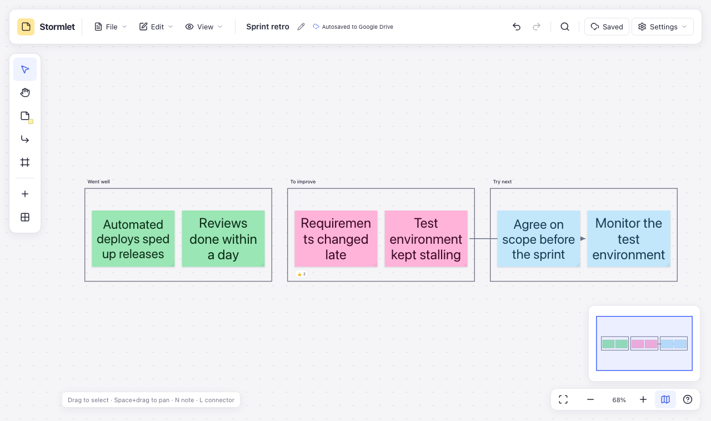
- Toolbar
- The File, Edit, Arrange and View menus, the board name (rename with ✎), where the board is kept, undo and redo, search, the Google Drive button, this User guide and Settings.
- Tools on the left
- Select, hand (move around), sticky note, connector and frame tools, plus “Add to center” and “Add several at once”.
- Canvas
- Where the board is. Move it with Space+drag or the hand tool, and zoom with the wheel.
- Bottom right
- Show all notes, zoom, the minimap and keyboard help.
2. Sticky notes
- Choose the sticky note tool or press N, then click the board: a note appears there. Start typing. You can also drag a color from the tool’s panel onto the board to place a note of that color, with a mouse, pen or finger.
- Press Enter or double-click to edit again, and Esc to finish. Shift+Enter starts a new line.
- While typing, Tab carries on in a new note to the right and Ctrl/Cmd+Enter in one below, with the same size and color. If the spot is taken, the note goes to the next free one.
- Paste several lines into “Add several at once” to get a note for each line. Cells copied from Excel or Google Sheets paste as notes too.
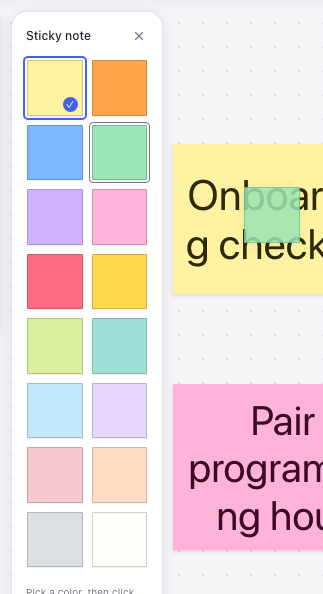
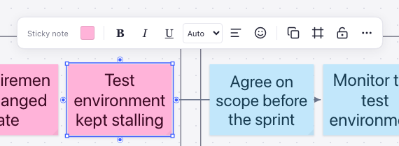
- Choose from 16 colors, bold, italic, underline and text alignment.
- The text size follows the note’s size and text. A size you pick stays while the text fits.
- Drag any of the four corner handles, or pick a size preset. See Layout and alignment.
- Add emoji reactions; choosing one again takes it back.
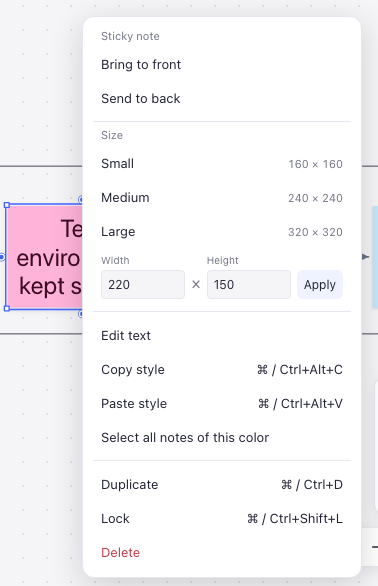
3. Frames and connectors
Frames
- Press F and drag an area to draw a frame; a click makes one of the default size. Horizontal and vertical lane presets are there too.
- Select notes and choose “Create frame” to put a frame around them.
- Moving or duplicating a frame takes its notes, nested frames and connectors along. Deleting a frame keeps what is inside.
- Double-click a frame’s title to rename it.
Connectors
- Press L, or drag a connection point around a note, to connect notes and frames. Connectors follow when notes move.
- Straight, rounded elbow or curved lines, arrows, color (black, gray, blue, red, green, purple), width, dashes and labels. In dark mode black lines are drawn light so they stay visible.
- Changing a line’s color, width or dashes makes the next line you draw look the same. Apply this style to all lines in the connector toolbar matches every line on the board at once (locked lines are skipped).
- Drag an end to connect it to something else.
4. Selecting and arranging
- Drag on an empty spot to select several notes; Ctrl/Cmd+A selects all.
- With several notes selected, align them, space them evenly, match their sizes or lay them out in a grid. See Layout and alignment.
- Select all notes of this color in a note’s menu picks every note sharing its color, handy for moving or grouping notes sorted by color.
- Ctrl/Cmd+G groups notes so they move together. Ctrl/Cmd+Shift+L locks them against moving or deleting by accident.
- Every change can be undone with Ctrl/Cmd+Z, including connectors removed together with a note.
- Ctrl/Cmd+F searches the notes’ text.
5. Layout and alignment
Guides and snapping
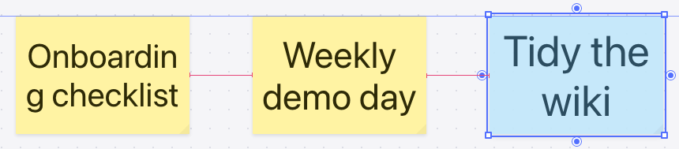
- While you drag, a note snaps to another note’s edges or center once it is within 8 screen pixels, and a blue guide shows.
- Centered between two notes, or one step on that repeats the gap its neighbours already have, it snaps to equal spacing and pink marks show. This works across and down.
- Hold Ctrl/Cmd while dragging to place a note freely. On a Mac use Cmd, as Ctrl+click opens the context menu.
- Frames work the same way: moving or resizing one shows guides to other frames and notes, and frames snap to equal spacing and matching sizes. A resized frame can also fit to the notes inside it.
- The note toolbar steps aside while you drag, so it does not hide the guides.
Resizing
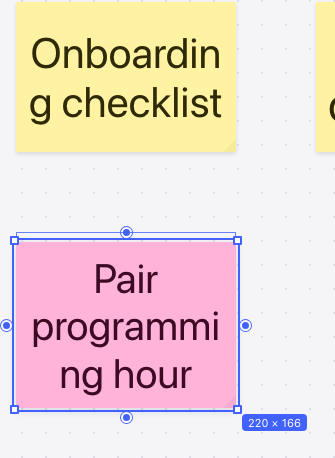
- A single selected note has handles on all four corners; the opposite corner stays put.
- A width or height close to another note’s snaps to it, and notes of that size (up to the four nearest) are marked. Edges also snap to other notes’ lines.
- Shift keeps the proportions; Ctrl/Cmd turns snapping off. With the bottom-right handle focused, arrow keys resize by 20px; on a multi-note selection the same keys on the dashed box’s bottom-right handle resize the whole selection.
- With several notes selected, a dashed box surrounds them. Dragging its corners scales every note’s position and size together. A selection with a locked note has no handles.
Aligning and matching sizes
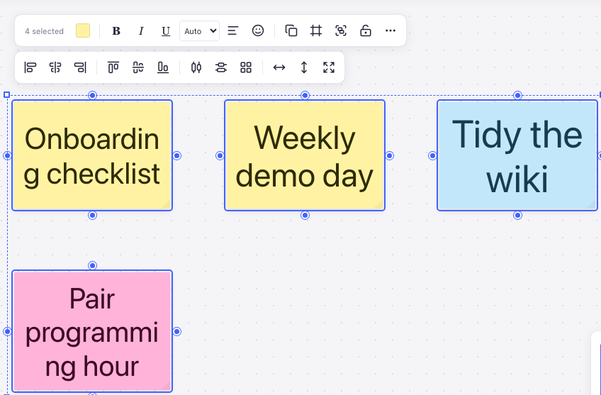
- Arrange: align left, horizontal centers, right, top, vertical centers or bottom; distribute horizontally or vertically; arrange in a grid. Groups move as one.
- Match size: same width, same height or same size. Notes take the largest value in the selection so no text gets cut off; each keeps its top-left corner.
- Shortcuts: Alt+A/H/D align left, horizontal centers or right; Alt+W/V/S align top, vertical centers or bottom; Alt+Shift+H/V distribute. On a Mac, hold Option.
Copying a style
Select a note and press Ctrl/Cmd+Alt+C to copy its color and text formatting (bold, italic, underline, alignment, text size), then select other notes and press Ctrl/Cmd+Alt+V. Size and text stay as they are. Copy style and Paste style in the right-click menu do the same. A copied style survives a reload and can be pasted in other tabs too.
The grid
View → Show grid draws a grid 20px apart, and View → Snap to grid makes moves and resizes land on it. A nearby note still wins over the grid. Each setting turns on and off on its own and is remembered next time.
7. Where a board is kept
The label next to the board name says where the board is saved.
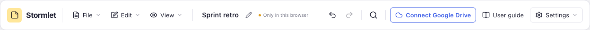
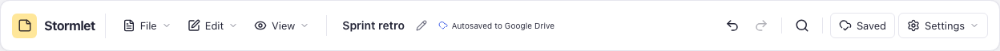
Browser storage can disappear when site data is cleared or a site goes unvisited for a while (Safari clears it after 7 days, for example). Keep boards that matter in Google Drive, or download them.
Usage statistics
Stormlet never sends the content of your boards anywhere. Where the site has usage statistics turned on, your first visit asks whether anonymous usage statistics may be sent to Google Analytics. Nothing is sent until you choose Allow.
- Sent: page visits; that a new board, opening or downloading a file or an image export (and its format) was used; the name of an error when one happens
- Never sent: the text of notes, frames and lines, board names, file names, error messages
- Turn it off or on at any time with Settings → Send usage statistics. Turning it off stops sending and removes the Google Analytics cookies.
8. Google Drive
Connecting and saving
- Choose Connect Google Drive on the right of the toolbar and sign in with your Google account.
-
The button becomes Save to Drive. Choose it and a folder, and a
.stormletfile named after the board is created there. - From then on, edits are saved whenever you pause. To save at once, press Ctrl/Cmd+S.
- Every tab remembers the folder you chose. A new tab or a new board is saved there with its first edit.
-
When the folder already has a file of that name, the file name gets a number such as
(2); the board name stays as it is. -
Stormlet only sees files it made or that you opened with it (the
drive.filepermission), nothing else in your Drive. - Sign-in lasts about an hour. From 10 minutes before the end the button says Renew, and a click in the app renews it. Open tabs share the sign-in.
Merging changes made elsewhere
When the same file was changed on another device or in another tab, different parts are merged when saving. Only when both sides changed the same thing differently does the button say Conflict; choose it to pick what to keep.
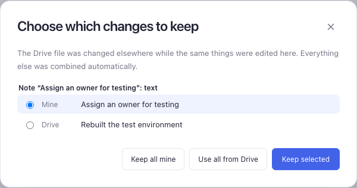
Disconnecting and reconnecting
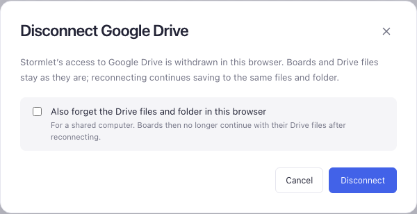
- Boards keep their Drive files when you disconnect; reconnecting continues saving to the same files.
- On a shared computer, choose Also forget the Drive files and folder in this browser.
- Connected with another Google account, saving stops, since the file is not in that account, and Stormlet tells you so.
- If the file cannot be found after reconnecting, choose the Drive button, then Find it in Drive again… and pick the same file.
- To unlink just one board from Drive, use File → Stop syncing.
9. Tabs and boards
Each tab shows a board of its own, so tabs can hold different boards and different Drive files.
- Opening the app again resumes the board you used last.
- A new tab, while another is open, starts with an empty board.
- Reloading keeps the tab’s board.
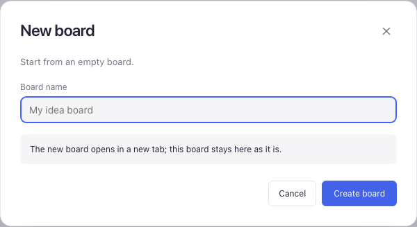
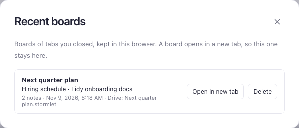
10. Opening, downloading and exporting files
-
File → Download as file saves the board as a
.stormletfile named after it. For a board not in Drive, Ctrl/Cmd+S downloads too. -
File → Open… (Ctrl/Cmd+O) opens a
.stormletfile; opening can be undone. - Boards in Drive open with File → Open from Drive….
- File → Export as PNG image and Export as SVG image save the whole board as a picture, ready for documents, chats and wikis. The PNG is drawn at twice the size so it stays sharp; the SVG scales without blurring and can be edited in design tools. Both use the light theme on white whatever the editor’s theme, without selection outlines or handles.
- A very large board is saved as a lower-resolution PNG, as browsers limit how big an image can be. Use SVG when you need it sharper.
11. Keyboard shortcuts
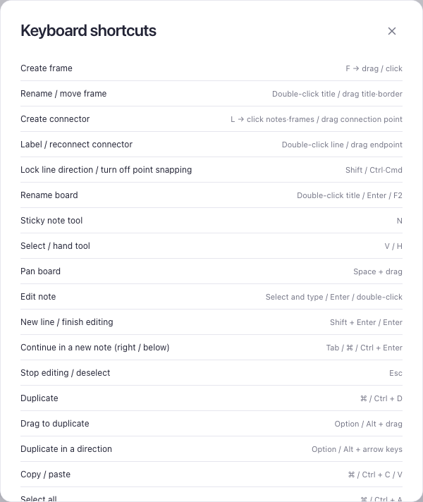
| Action | Shortcut |
|---|---|
| Note / select / hand tool | N / V / H |
| Connector / frame tool | L / F |
| Edit, new line, finish | Enter, Shift+Enter, Esc |
| Continue in a new note (right / below) | Tab / Ctrl/Cmd+Enter |
| Duplicate / in a direction | Ctrl/Cmd+D / Alt+arrow |
| Group / ungroup | Ctrl/Cmd+G / Ctrl/Cmd+Shift+G |
| Align left / horizontal centers / right | Alt+A / H / D |
| Align top / vertical centers / bottom | Alt+W / V / S |
| Distribute horizontally / vertically | Alt+Shift+H / V |
| Copy / paste style | Ctrl/Cmd+Alt+C / V |
| Resize: keep proportions / no snapping | Shift / Ctrl/Cmd + corner drag |
| Move without snapping | Hold Ctrl/Cmd while dragging |
| Lock | Ctrl/Cmd+Shift+L |
| Undo / redo | Ctrl/Cmd+Z / Ctrl/Cmd+Shift+Z |
| Show all notes / selection | Alt+1 / Alt+2 |
| Search | Ctrl/Cmd+F |
| Open a file / save | Ctrl/Cmd+O / Ctrl/Cmd+S |
12. Questions
“Not saved” shows next to the board name.
The browser’s storage is full, or the browser blocks saving. Download the board or save it to Drive, and delete recent boards you no longer need to make room.
The Drive button says “Reconnect”.
The sign-in ended. Choose the button to reconnect, and the edits made meanwhile are saved. They stay in this browser until then.
How do I open a board on another device?
Save it to Google Drive, then on the other device use File → Open from Drive… and choose the same file. Changes made in both places are merged when saving.
Notes keep snapping next to other notes.
That is the alignment and equal-spacing snapping. Hold Ctrl/Cmd while dragging to place a note freely, and turn off View → Snap to grid if it is on.
On a Mac, Option+A types “å”.
The note was still being edited, so the key typed a character. Press Esc to finish editing, then press it with the note selected to align.
How do I report a problem?
Choose Settings → Troubleshooting…, then Copy diagnostics, and paste it into your bug report. It holds the app version, the browser and recent log entries, never the text of your notes.
How do I change the language?
Choose the browser language, English or 한국어 in the Settings menu. Names the app makes for boards and frames stay English in every language.